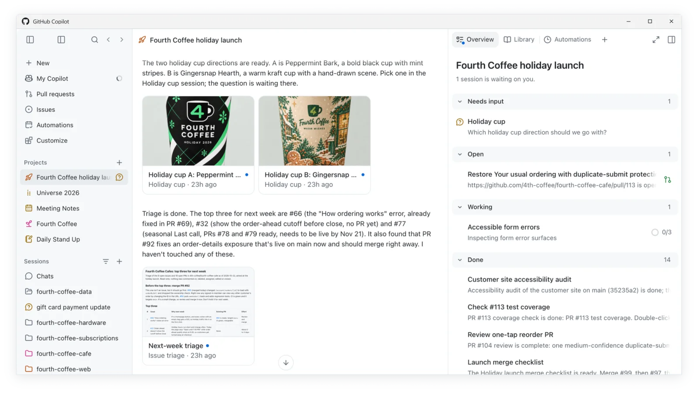

Create in flow. A project in the GitHub app keeps the goal, the conversations and the work in one place, for you and for the agents working with you.
The demo starts here: an idea becomes a project, and the project becomes work that agents can pick up.

A project with its goal, conversation and outputs in one place. The Overview groups sessions that need input, are open, are working and are done.
02Canvases
A canvas is a side panel the agent can open and drive. It might be an editor, browser, terminal, document or any interface an extension provides.
The runtime keeps one shared surface. Providers handle open, action and close, and the app renders every canvas. Opening only shows UI, actions can change things and ask first, and extension canvases stay isolated from the app.
Conversationagent
YouOpen the architecture in a canvas.
CopilotOpening an editor beside us.
openactionclose
Editor canvasside panel
README.mdflow.mdnotes.md
Agentic delivery
Open only shows UIActions ask before change
RuntimeKnows what the agent can see and routes each call.
ProviderDeclares the canvas and handles open, action and close.
AppRenders every built-in and extension canvas.
Extension canvases run in an isolated surface, separate from the app.
03Code Review
Uphold the quality bar. Ask Copilot to review a pull request and it comments in the diff, with suggested changes you can commit in one click.
It is a first review, not the last word. You still decide what ships.
src/auth/session.ts+3−1
40export functionverifyToken(given, stored) {
41if (!given || !stored) return false;
42+return given === stored;
43}
Copilotbotcommented
Comparing secrets with === can leak timing information. Use a constant-time comparison instead.
Quality checks travel with the work. Code scanning flags a problem in the pull request, and Copilot Autofix suggests a fix you can review, edit and commit.
The same checks apply to a change whether a person or an agent wrote it.
HighCodeQL · js/sql-injection
Database query built from user-controlled sources
src/routes/users.js:28
26router.get("/users/:id", async (req, res) => {
27const { id } = req.params;
28const rows = await db.query("SELECT * FROM users WHERE id = " + id);
Copilot Autofixsuggested fix
28−const rows = await db.query("SELECT * FROM users WHERE id = " + id);
28+const rows = await db.query("SELECT * FROM users WHERE id = ?", [id]);
Uses a parameterized query.EditCommit fix
05Agentic Software Delivery
A request from you, a code change or a signal from production sets work in motion. Assign an issue to Copilot and it works in its own environment, then opens a draft pull request for you to review.
The work moves through planning, building and verifying, and you are brought in where your judgment is needed.
GitHub, The Learning Machine, carries the result into the next cycle.
06Automation/Squads
Build squads that keep software moving. Each one watches the signals, investigates the work, makes a change, verifies the result and learns from what happened.
People stay in the loop for judgment, coordination and the work that needs context only they have.
Test trusted againQuarantine clearedBuild time down
07GitHub Intelligence
Intelligence carries forward what it learns about your goals, how your team delivers software, and what good looks like.
Fitness functions define what good looks like. Skills, memory and evidence grow only when a run proves something, so the next run starts smarter.
Events
Human requestCode changeProduction signalSchedule
Plangoals to approach↕ reads goals and fitness
Buildknowledge to change↕ reads skills and memory
GitHubTHE LEARNING MACHINE
Illustrative example: checkout errors below 1%
Goals and fitnessFitness functions define what good looks like.
Role knowledgeSkills show each agent role how to do its job.
Domain knowledgeMemory holds your codebase and team context.
EvidenceRun 1 adds tests, review and production signals.
Accumulates every run
Knowledge update waits for an observed outcome.
Observed outcome → update skills and memory → next run
Observeusage to signals↕ writes signals to fitness
Verifychange to evidence↕ writes proof from the run
Run 1: Plan reads goals and fitness.
Completed work
Feature deliveredflag on, 100% rolloutBug fixedcheckout errors returned to baselineDependencies updated17 bumps, all greenMigration executedcapabilities unlockedSpec and docs updatedin sync with codeCode review completedapproved, 3 commentsDeployment doneprod, health ok
Automations
Routine work should not wait for you to start it. Choose what kicks it off, like a push, a schedule or a new issue, and let it run.
When a step needs a person, like a deploy to production, it waits for one.
Add keyboard shortcutsci.yml · on: push
build
build1m 08s
test (matrix)
ubuntu-latest
windows-latest
macos-latest
deploy
production
Deployment to production waits for a required reviewer.Review deployment
08Index
A small library of the finished pages in this repository. Choose a page to preview it here, or open the full page in a new tab.
The preview stays read-only so it does not take pointer or keyboard control from this index.
Comparing secrets with
===can leak timing information. Use a constant-time comparison instead.